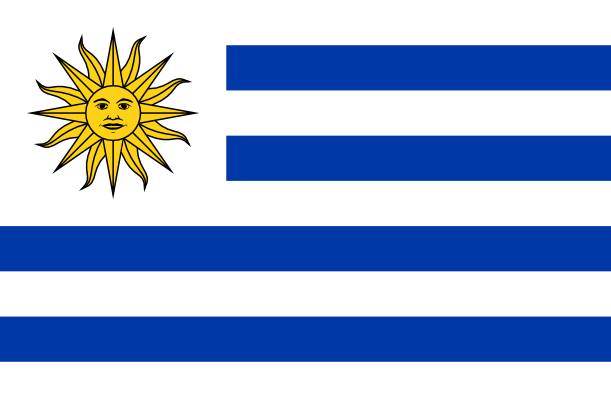

 Fundada em 30 de março de 1900 Endereço: Guayabo 1531 - Montevideo 11200 - Uruguay Filiação FIFA: 1923 Filiação Conmebol: Campeão da Copa do Mundo:1930 e 1950 Site: www.auf.org.uy A Seleção Uruguaia de Futebol, também conhecida como Celeste ou Celeste Olímpica, representa o Uruguai nas competições de futebol da CONMEBOL e FIFA.
Possui uma das mais gloriosas histórias do futebol mundial, tendo conquistado um total de 21 títulos internacionais oficiais, sendo a seleção com mais títulos oficias no mundo. Foi a primeira seleção, junto à Argentina, a jogar uma partida internacional fora das Ilhas Britânicas, em 16 de maio de 1901 em Montevidéu.
Seria conhecida como "A Celeste" desde seu primeiro triunfo em Montevidéu, em 15 de agosto de 1910 por 3 a 1, na primeira partida em que utilizou sua camiseta celeste, adotada como emblema nacional em reconhecimento ao triunfo que pouco antes havia conseguido o River uruguaio ante o poderoso Alumni portenho por 2 a 1 com essas mesmas cores.
A Seleção Uruguaia de Futebol ergueu a primeira Copa do Mundo, realizada no Uruguai em 1930, vencendo a Argentina por 4 a 2 na final. Os uruguaios se consideram tetra-campeões mundiais, pois venceram as Olimpiadas em 1924 e 1928 - naquela época não existia a Copa do Mundo, inclusive com notícias das conquistas como campeões mundiais por periódicos do Brasil. Fonte das Informações:www.auf.org.uy Arquivo Campeões do Futebol
Alguns anos depois do fim da Segunda Guerra Mundial, a FIFA resolveu escolher o Brasil como sede da edição de 1950.
A Celeste Olímpica iniciou no Grupo 4 junto com a Bolívia e aplicou uma das maiores goleadas em Copas do Mundo; 8 a 0 nos bolivianos. Destaque para Míguez que marcou 3 vezes.
No quadrangular final com Brasil, Suécia e Espanha, a celeste iniciou empatando com a Espanha por 2 a 2; gols de Ghiggia e Obdulio Varela. Já na segunda partida contra a Suécia, venceu por 3 a 2 a Seleção da Suécia com 2 gols de Míguez e um de Ghiggia. A última partida era contra a badalada Seleção Brasileira, que havia vencido as suas duas partidas no quadrangular com goleadas de 7 a 1 na Suécia e 6 a 1 na Espanha. o Uruguai precisaria vencer o Brasil por qualquer placar e o Brasil precisava apenas de um empate.
Na partida, o Brasil iniciou vencendo com gol de Friaça, mas o Uruguai empatou com Schiaffino e virou com Ghiggia. O silêncio tomou conta do Maracanã às 16 horas e 50 minutos do dia 16 de julho. Desolados, os quase 200 mil torcedores demoraram mais de meia hora para deixar o estádio. O time brasileiro fez trinta lances a gol (dezessete no primeiro tempo e treze no segundo). Os jogadores cometeram quase o dobro de faltas, um total de 21, contra apenas onze do Uruguai.
Jules Rimet não conseguiu entregar a taça e decidiu se retirar. Mas logo depois voltou e Obdulio Varela recebeu a taça. Rimet disse: "Estou feliz pela vitória que vocês acabam de conquistar. Cheia de mérito, sobretudo por ter sido inesperada. Com minhas felicitações".